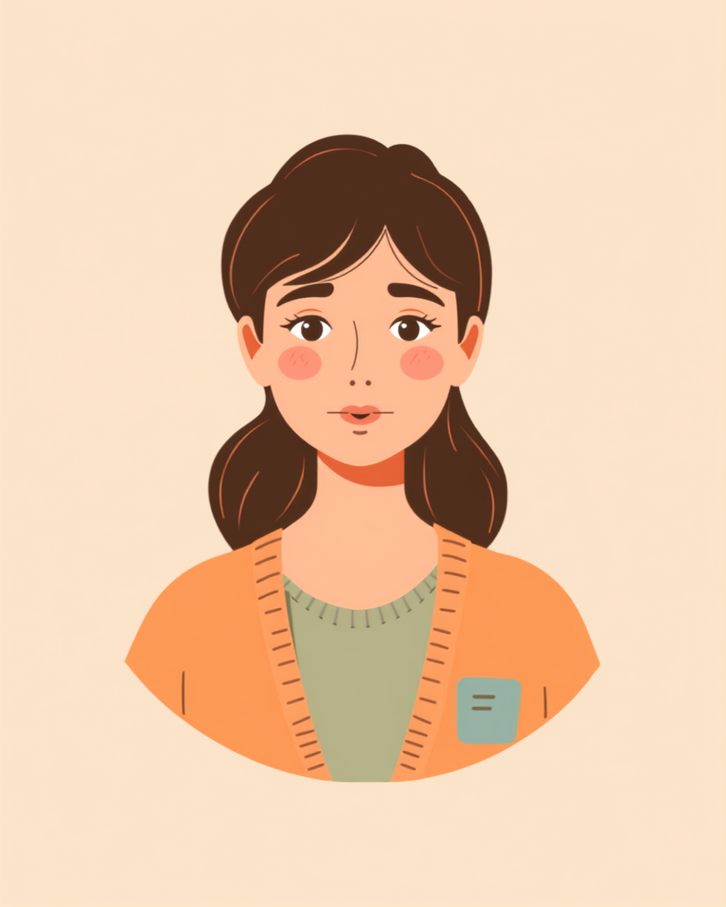

ADHDの特性のひとつに「衝動性」があります。思いついたことをすぐ言葉にしたい気持ちが強く働きやすく、会議で相手の話が終わる前に発言してしまう、雑談でつい話に被せてしまう、といった場面につながることがあります。悪気があるわけではないのに、後から「また遮っちゃった」と自己嫌悪になる方も少なくありません。この記事では、そうした場面が起きる背景と、職場でできる工夫、相談できる窓口を当事者の声をもとに整理しました（2026年8月時点の情報です）。
PR


「また遮っちゃった」自己嫌悪の正体
ADHDの「衝動性」は、思考のスピードが速く、頭に浮かんだことをすぐ言葉にしたいという働きが強く出やすい特性のひとつと言われています。怠けや配慮不足ではなく、脳の働き方の特性によるものとされています。ミミ
就労支援の現場で関わってきた中で、ADHDのある方から繰り返し聞いてきた言葉があります。「相手が話している途中なのに、思いついたことをつい口にしてしまう」というものです。言った瞬間に「あ、しまった」と気づくのに、次の瞬間にはまた同じことを繰り返してしまう。その積み重ねが、「自分はだめだ」という自己嫌悪につながっている方も少なくないようです。
本人としては、相手の話をないがしろにしたいわけでは決してありません。むしろ話に興味があるからこそ、思いついたことをすぐ共有したくなる、というケースも多いようです。それでも周囲からは「人の話を聞かない人」「せっかちな人」と受け取られてしまうことがあり、そのギャップに苦しんでいる方もいます。
!
衝動性の現れ方や程度には個人差があります。この記事で挙げる内容がそのまま当てはまるとは限らないため、気になる場合は自己判断せず医療機関や支援機関に相談することをお勧めします。
「正直言うと、入社して3ヶ月目くらいが一番つらかったです。会議中に先輩が話してる途中で、『あ、それって多分こうですよね』って食い気味に言っちゃって、周りの空気がピシッと固まったのを今でも覚えてます。悪気なんて全然なくて、むしろ早く共有したい一心だったんですけど、後で先輩に『最後まで聞いてから話して』って言われて、その日は帰り道でずっと自分を責めてました。分かってるのに直せないのが一番しんどかったです。」
20代・女性（ADHD・IT企業エンジニア職）
相談の一コマ

相談者
また会議で人の話を遮ってしまいました。分かっているのに、その場になると止められないんです。

ミミ
ADHDの衝動性は、意志の弱さではなく特性として起こりやすいものとされています。まずはそのことを知っておくだけでも、自分を責める気持ちが少し軽くなるかもしれません。
相談者
でも実際、周りに迷惑をかけてしまっているのも事実で…どうしたらいいのか分からなくて。
ミミ
完全になくそうとするより、言いたくなった瞬間に一度メモに書き留めるなど、「間」を作る工夫から始めてみる方法もありますよ。次の章で具体的に見ていきましょう。
会議や雑談で、具体的に何が起きているのか
衝動性がどんな場面で表に出やすいかは人によって異なりますが、よく聞かれるのは会議・雑談・電話対応の3つの場面です。会議では、相手がまだ話し終えていないのに結論を先回りして口にしてしまう。雑談では、相手の話に自分の話を重ねて「それより私も」と被せてしまう。電話対応では、相手の説明の途中で確認したいことを差し込んでしまう、といった具合です。
共通しているのは、「聞き逃したくない」「早く伝えたい」という気持ちが先に立ち、話すタイミングを見計らう前に言葉が出てしまうという点です。頭の中で次々と考えが浮かぶスピードに、話すタイミングを待つという行為が追いつかない、という感覚を持っている方もいるようです。
あくまで体感の一例です。効果の出方には個人差があります
この図解の数字はあくまで一例ですが、「間」を意識的に作るだけで、遮ってしまう場面が減ったと感じる方は少なくないようです。ゼロにすることを目指すのではなく、少しずつ減らしていく、という視点が長く続けるコツかもしれません。
「めちゃくちゃ反省したのは、取引先との電話中に、相手がまだ説明してる途中で『あ、それってつまりこういうことですよね』って被せちゃったことです。相手は一瞬黙って、それから『いえ、続きがありまして』って冷静に言われて、こっちが恥ずかしくて顔が熱くなりました。半年くらい営業やってますけど、いまだに月2回くらいはやらかしてる気がします。最近はメモ帳を手元に置いて、言いたくなったらまずそこに書くようにしてから、少しはましになった気がしています。」
40代・男性（ADHD・営業職）
職場でできる、間を置くための工夫
まずは自分の衝動のサインを知る
「言いたい」という気持ちが高まる瞬間には、体の感覚として前兆がある、という方もいます。手がそわそわする、前のめりになる、口が開きかけるなど、自分なりのサインに気づけると、そこで一度立ち止まる練習がしやすくなります。
「言いたい」と感じた瞬間に、手元のメモに一言だけ書いておく方法を試している方もいます。書いたことで少し満足感が得られて、話すタイミングを待ちやすくなるという声もありますよ。ミミ
職場での伝え方の工夫
特性そのものをすべて説明する必要はありませんが、「思いついたことをすぐ言ってしまう癖がある」と一言伝えておくだけで、周囲の受け止め方が変わる場合があります。信頼できる同僚に、遮ってしまったときにやんわり合図を送ってもらう約束をしている方もいるようです。
- 「思いついたら忘れる前に言いたくなる癖があるので、気になったら教えてください」
- 会議前に「発言したいことは一度メモしてから話す」と自分の中でルールを決めておく
- 信頼できる同僚と、遮ってしまったときの小さな合図（手を軽く上げる等）を決めておく
- 雑談では「今のあなたの話、最後まで聞かせてください」と自分から一言添える
すべてを一度に変えようとすると、うまくいかないときに落ち込みやすくなります。ひとつずつ、続けられそうなものから試してみることをお勧めします。
一人で抱えないための相談先
職場で相談できる窓口
コミュニケーションの特性に関する配慮の相談は、甘えではなく業務上の相談です。産業医が選任されている職場であれば、間接的に配慮を相談する窓口として利用できる場合があります。就労移行支援事業所では、職場でのコミュニケーションの工夫を一緒に整理してくれることもあります（2026年8月時点の情報です）。

📋 体験談を読む
就労移行支援に通ってみた正直な感想【半年通って感じたこと】
note（ゆーき）
i
職場に選任されている産業医（常時50人以上の事業場では選任義務があります）、地域の発達障害者支援センター、ハローワークの専門援助窓口なども相談先として挙げられます。詳しくは自治体や事業所にご確認ください（2026年8月時点の情報です）。
衝動性の現れ方や、有効な工夫の内容には個人差があります。この記事の内容がそのまま当てはまるとは限らないため、実際の対応は主治医・支援者とよく相談しながら進めることをお勧めします（2026年8月時点の情報です）。
遮ってしまう自分を責め続けなくても大丈夫です。サインに気づき、間を置く工夫を積み重ねていくことが、少しずつの変化につながります。
よくある質問
Q. ADHDの人が話を遮ってしまうのはなぜですか？
ADHDの特性のひとつである衝動性により、思いついたことをすぐ言葉にしたい気持ちが強く働きやすいと言われています。悪気があって遮っているわけではなく、脳の働き方の特性として起こりやすい現象とされています。ただし程度や状況は個人差が大きいため、気になる場合は専門機関に相談することをお勧めします（2026年8月時点の情報です）。
Q. 会議中に発言のタイミングがつかめません。どうすればいいですか？
思いついたことを一度メモに書き留めてから発言する、話す前に心の中で数秒数えるといった「間」を作る工夫が助けになる場合があります。すべてを完璧にコントロールしようとせず、できる工夫から少しずつ試してみる方法もあります。
Q. 話しすぎてしまう自分を職場でどう伝えればいいですか？
すべての事情を説明する必要はありません。「思いついたことをすぐ言ってしまう癖があるので、気になったら教えてください」など、業務に関わる範囲で一言伝えている方もいるようです。信頼できる同僚や上司から一言だけ伝えてもらう合図を決めておく方法も助けになる場合があります。
Q. ADHDでも使える職場の相談先はありますか？
職場に選任されている産業医、就労移行支援事業所、地域の発達障害者支援センターなどが相談先として挙げられます。特性への配慮の相談は甘えではなく業務上の相談であるため、一人で抱え込まず利用できる窓口に相談することをお勧めします（2026年8月時点の情報です）。
Q. 家族や友人からも「話を遮る」と言われます。改善はできますか？
完全になくすことを目指すより、衝動が高まったサインに早めに気づき、間を置く工夫を積み重ねていくことで、遮ってしまう場面が減ったと感じる方もいるようです。一人で抱え込まず、身近な人に「気づいたら教えてほしい」と伝えておくことも工夫のひとつです。
すべてを一度にやろうとせず、できるところから
PR


一人で抱え込む前に、今の気持ちを話してみませんか
「まだ迷っている」段階でも大丈夫です。mimemimeの無料相談は、今の状況の整理から一緒に始められます。
無料で話してみる
おのざる
mimemime代表。就労支援の現場経験をもとに、障がいのある方の働く不安に寄り添う記事を執筆。